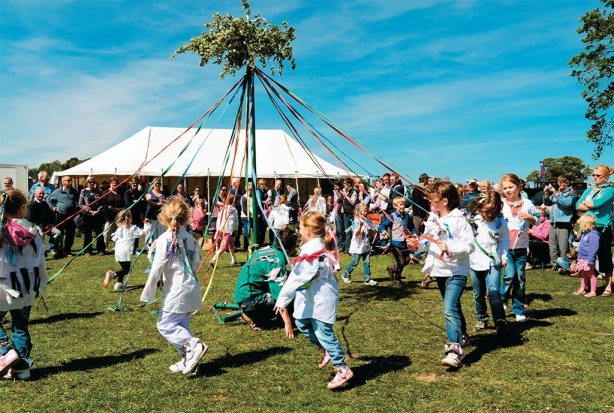

Local Attractions


Explore ruins of long ago, stunning beaches, historic lighthouse, and the remnants of our once-thriving tin mine. Whisper Bay offers a unique blend of natural beauty and rich history. Don't miss the guided night tours of the lighthouse, where tales of mysterious shipwrecks and ghost sightings come to life.
The historic lighthouse, standing tall since the 1800s, offers an insight into the maritime history of Whisper Bay. Climb to the top for a panoramic view and explore the museum inside, which features artifacts and stories of the brave lighthouse keepers.
Whisper Bay Beach is perfect for family outings. Enjoy the golden sands, clear waters, and the occasional sighting of playful dolphins. Picnic areas and children's play zones make it a family-friendly destination. During the high season we also have professional lifeguards to make sure that nothing happens!
Accommodations
Stay at one of our cozy bed and breakfasts, charming cottages, or luxurious hotels. Whether you're looking for a rustic retreat or a comfortable stay, Whisper Bay has something for everyone. Special packages are available for romantic getaways and family vacations. Ask about our Haunted Room experience at the Whisper Bay Inn!
Experience the warmth and comfort of our local bed and breakfasts. Enjoy home-cooked meals, personalized service, and a cozy atmosphere that will make you feel right at home.
Rent one of our charming seaside cottages for a more intimate and private experience. These fully-equipped cottages provide the perfect home away from home, complete with beautiful sea views and easy beach access.
Summer Fête
Join us for the annual Summer Fête, a weekend of fun activities, live music, and local crafts. It's the perfect way to experience the community spirit of Whisper Bay. Participate in the mysterious scavenger hunt that takes you through the town's most enigmatic landmarks, culminating in a grand prize for the winners.
Enjoy a variety of stalls selling local crafts, delicious food, and unique souvenirs. The Summer Fête is a great opportunity to meet local artisans and take home a piece of Whisper Bay.

The Summer Fête offers a wide range of activities for children, including face painting, games, and crafts. It's a fun-filled weekend for the whole family.
Walking
Walking is one of the most popular ways to enjoy Britain's rural areas, so we are creating a comprehensive new walking site to help you plan your holiday. Discover trails that wind through ancient forests, across rolling hills, and along scenic coastlines. Guided walks are available, with local historians sharing intriguing stories of the area's past.

Explore our scenic walking trails that take you through lush forests, open meadows, and along the beautiful coastline. Each trail offers unique sights and sounds of nature. Enjoy a leisurely walk through picturesque meadows, where you can observe wildflowers, birds, and other wildlife. It's a peaceful escape from the hustle and bustle of daily life.
Join our guided walking tours, where knowledgeable historians and naturalists will enhance your experience with fascinating stories and insights about the local area. For the more adventurous, our coastal hiking paths offer challenging trails with rewarding views. Bring your friends and experience the thrill of exploring Whisper Bay's rugged coastline.
Contact Us
If you have any questions or need more information, please contact us at:
Email: info@whisperbaytourism.co.uk
Phone: 01234 567890
For more information about local folklore and legends, visit the dedicated site: Whisper Bay Folklore